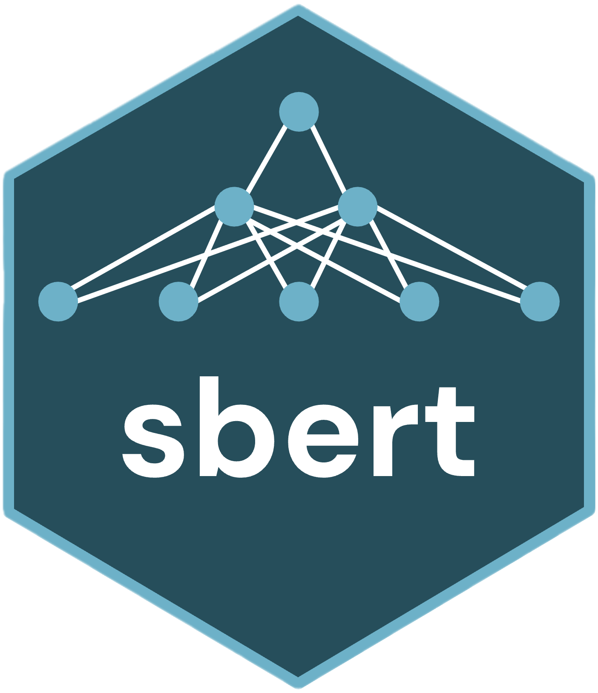

Assign New Documents to Fitted Topics
Source:R/inference.R
predict.sbert_topic_model.RdPredicts the topic of unseen documents by embedding them and assigning each to the nearest stored topic centroid under cosine distance. The fitted model is not modified. Supply either a loaded `model` (to embed `text`) or a precomputed embedding matrix whose rows align with `text`.
Usage
# S3 method for class 'sbert_topic_model'
predict(object, text, model = NULL, embeddings = NULL, batch_size = 32L, ...)Arguments
- object
A fitted [topics()] model.
- text
Character vector of new documents. A model fitted with `segment = "sentence"`, `"clause"`, or `"phrase"` splits them the same way first (with the fitted `max_tokens`, `merge_below`, and `min_content`) and assigns every segment.
- model
A loaded [sbert_model][load_model()], a pinned model name, or `NULL` for the default model; ignored when `embeddings` are supplied. The embedding dimension must match the fitted model.
- embeddings
Optional numeric matrix with one row per document, or one row per segment for a segmented model.
- batch_size
Batch size passed to [encode()] when `model` is used.
- ...
Unused; included for S3 compatibility.
Value
A base data frame with one row per document and columns `document_id`, `document_name`, `text`, `topic`, `label` (the fitted topic label), and `distance` (cosine distance to the assigned centroid). For a segmented model, one row per segment, with `document_id` naming the source document and `segment` its position within it.
Examples
text <- c(
"Cats chase mice", "Dogs chase balls",
"Stocks and bonds trade", "Markets price shares"
)
embeddings <- rbind(c(1, 0), c(0.9, 0.1), c(0, 1), c(0.1, 0.9))
fitted <- topics(text, 2, embeddings = embeddings)
predict(fitted, "Bulls and bears move markets", embeddings = rbind(c(0.2, 0.8)))
#> document_id document_name text topic
#> 1 1 Bulls and bears move markets 2
#> label distance
#> 1 bonds / markets / price 0.01792973